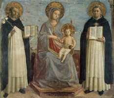
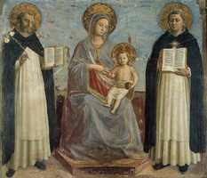

|  |
|---|
Textum a Th. Kaeppeli et A. Dondaine Romae 1941 editum
recognovit Enrique Alarcón et instruxit


|  |
|---|


[92184] Cap. Florentie 1272, n. 1 Volumus et mandamus quod priores et vices ipsorum gerentes in portis et sacristiis fratres instituant securos et discretos, et advenientes benigne et caritative recipiant, et claves portarum custodiant diligenter.
[92185] Cap. Florentie 1272, n. 2 Item districte inhibemus ne alicui fratri de bonis conventus pro vestibus certa pecunia concedatur, sed priores et eorum vices gerentes pannos emi faciant, et fratribus indigentibus secundum honestatem ordinis, prout facultas permiserit, in vestibus provideatur oportunis.
[92186] Cap. Florentie 1272, n. 3 Item universis prioribus et eorum vices gerentibus districtius inhibemus ne libros et alias res conventuum sine assensu conventuum expresso alienare presumant, et pretium ex libris receptum in nullum alium nisi in librorum usum aliquatenus expendatur.
[92187] Cap. Florentie 1272, n. 4 Item, volumus et mandamus ut constitutio de pecunia non portanda melius observetur.
[92188] Cap. Florentie 1272, n. 5 Iniungimus priori Viterbiensi ut pecuniam quam de Avicenna vendito recepit, in libris utilibus conv. Viterbiensi expendat.
[92189] Cap. Florentie 1272, n. 6 Studium generale theologie quantum ad locum et personas et numerum studentium committimus plenarie fr. Thome de Aquino.
[92190] Cap. Florentie 1272, n. 7 Studium artium ponimus in conv. Pisano, ubi leget fr. Ricculdus Florentinus, cuius studio deputamus et cetera.
[92191] Cap. Florentie 1272, n. 8 Volumus autem et mandamus ut conventus et loca de quorum predicatione studentes tam in theologia quam in artibus traxerunt originem, teneantur ipsis in vestibus providere.
[92192] Cap. Florentie 1272, n. 9 Diffinitor capituli generalis fr. Eufranon, socius eius fr. Salvus de Barga.
[92193] Cap. Florentie 1272, n. 10 Terminos predicationis conv. Senensis, Urbeveteris, Tudertini et Narnie assignamus secundum quod in cedula nostris sigillis munita plenius continetur.
[92194] Cap. Florentie 1272, n. 11 Facimus visitatores et cetera.
[92195] Cap. Florentie 1272, n. 12 Iniungimus autem omnibus fratribus qui per presentem ordinationem sunt conventibus et domibus assignati, quod infra XV dies postquam huiusmodi ordinatio ad eos pervenerit, ad conventus et domos quibus deputati sunt accedant.
[92196] Cap. Florentie 1272, n. 13 Capitulum provinciale sequens ponimus Rome in festo sancti Michaelis, ita tamen quod diffinitores in vigilia eligantur. Committimus priori provinciali vel eius vicario quod tempus et locum capituli mutare possit, si sibi videbitur expedire. Volumus autem quod fratres ante tres dies predicte vigilie ad locum capituli non accedant.